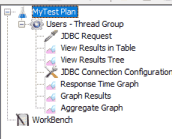
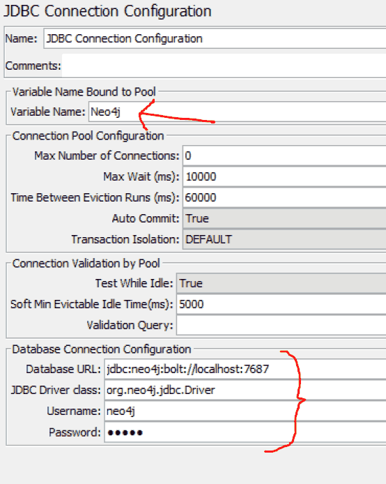

Watch these videos to get a feel for JMeter if you don't know it yet (set speed to 2x and use the arrow keys to skip boring parts). YES, I KNOW IT'S FOR HTTP ONLY! It's just so you get familiar fast with the UI 🙂
You should have something like this:


(I can't tell you what to exactly put in the "SQL Query" part, because I don't know your data structures)

Get neo4j-jdbc-driver-3.1.0.jar or a similar version:
Add the file to the Library in your Test Plan:

Press the Green Play button to run the test. You should see results. However, note that JMeter may have trouble with setting up multiple connections, which can cause errors (indicated by a red shield with a cross).

This process should not have been this hard to find. It took me 3 frustrating hours to figure this out on my own. I suffered so you don't have to. 😒